Enclustra Build Environment - User Documentation¶
Introduction¶
This is the user documentation for the Enclustra Build Environment project.
Version Information¶
| Date | Rev | Author | Changes |
|---|---|---|---|
| 2015-05-08 | 0.1.0 | Karol Gugala | Buildsystem description |
| 2015-05-11 | 0.1.1 | Aleksandra Szawara | Language check |
| 2015-07-06 | 0.1.2 | Aurelio Lucchesi | Minor corrections |
| 2015-11-20 | 0.1.3 | Tomasz Gorochowik | Major reorganization |
| 2016-06-21 | 0.1.4 | Tomasz Gorochowik | Project mode section |
| 2017-06-23 | 0.1.5 | Maciej Mikunda | Updates for release v1.5 |
| 2018-03-21 | 0.1.6 | Mariusz Glebocki | Updates for release v1.6 |
Build Environment¶
This chapter describes the usage of the build environment.
The whole build environment is written in Python.
Its internal functionality is determined by ini files placed in a specific directory layout.
Prerequisites¶
To run the build script a Python interpreter is required. The system is compatible with both, Python 2 and Python 3.
The build environment requires additional software to be installed as listed below:
| tool | minimal version | comments |
|---|---|---|
| dialog | 1.2-20130928 | Required only in the GUI mode |
| make | 3.81.8 | |
| git | 1.9.1 | |
| mercurial | 2.8.2 | |
| tar | 1.27.1 | |
| unzip | 6.0 | |
| curl | 7.35.0 | |
| wget | 1.15 | |
| bc | 1.06.95 | |
| libssl-dev | 1.0.0 | |
| patch | 2.7.1 | |
| rsync | 3.1.0 | |
| autoconf | 2.69 | Required to build a buildroot rootfs |
| g++ | 4.8.3 | Required to build a buildroot rootfs |
| gcc | 4.8.3 | Required to build the Linux kernel, U-Boot and a buildroot rootfs |
For more information on how to install the required packages in the supported systems, please refer to the corresponding subsection (OpenSUSE 42.3, Ubuntu 14.04 LTS).
OpenSUSE 42.3¶
su -
zypper -n install -yt pattern devel_basis
zypper -n install -y autoconf bc curl gcc-c++ git glibc-32bit \
mercurial python-dialog unzip wget
Ubuntu 14.04 LTS¶
sudo apt update
sudo apt install -y autoconf bc build-essential curl git mercurial \
libc6-i386 python python-dialog unzip wget
Directory Structure¶
The build environment is designed to work with a specific directory structure depicted below:
|-- bin
|-- binaries
|-- buildscripts
|-- sources
| |-- target_submodule_1
| |-- target_submodule_2
| |-- target_submodule_3
| |-- target_submodule_4
|-- targets
| |-- Module_1
| |-- BaseBoard_1
| |-- BaseBoard_2
| |-- Module_2
| |-- BaseBoard_1
|-- target_output
| Folder | function |
|---|---|
| bin | Remote toolchains installation folder. |
| binaries | Additional target binaries download folder. |
| sources | master_git_repository clone folder. It contains submodule folders. |
| buildscripts | Build system executable files. |
| targets | Target configurations are placed here. |
| target_output | Folders generated during the build process, that contain the output files after a successful build of every specifc target. |
Important
By default, the target output folders are named according to this folder naming scheme:
out_<timestamp>_<module>_<board>_<bootmode>.
The default name can be overwriten during the build process.
Repositories Structure¶
The sources directory is the master git repository with a number of submodules pointing to actual code repositories.
During the fetch phase, the build environment synchronizes only the submodules required to build the selected targets.
.
|-- container_git_repository
| |-- target_submodule_1
| |-- target_submodule_2
| |-- target_submodule_3
General Build Environment Configuration¶
Environment settings are stored in the enclustra.ini file in the main directory of the build environment.
Before starting the build script, one may need to adjust the general settings of the build environment by editing this file.
One of the most crucial setting is the number of build threads used in a parallel.
This parameter is set in the [general] section by changing the nthreads key.
Additionally, parameters in the [debug] section allow the user to adjust the logging settings:
- If the
debug-callsoption if set totrue, the output of all external tool calls (such asmake,taretc.) will be displayed in the terminal. - If the
quiet-modeoption is set totrue, the build log of the targets will not be printed to the terminal, only informations about actual build state will be shown. This option does not affect thebuild-logfileoption. - If the
build-logfileoption is set to a file name, the build environment will write the whole build log output to that file. If the option is not set, the output will not be logged. - If the
break-on-erroroption is set totrue, the build environment will interrupted on the first error. Otherwise the build environment will only print an error message and continue to work on a next available target.
Supported Devices¶
| Family | Module | Base board | Available targets |
|---|---|---|---|
| Xilinx | Cosmos XZQ10 | – | Linux, U-Boot, Buildroot |
| Xilinx | Mars ZX2 | Mars Starter | Linux, U-Boot, Buildroot |
| Xilinx | Mars ZX2 | Mars EB1 | Linux, U-Boot, Buildroot |
| Xilinx | Mars ZX2 | Mars PM3 | Linux, U-Boot, Buildroot |
| Xilinx | Mars ZX3 | Mars Starter | Linux, U-Boot, Buildroot |
| Xilinx | Mars ZX3 | Mars EB1 | Linux, U-Boot, Buildroot |
| Xilinx | Mars ZX3 | Mars PM3 | Linux, U-Boot, Buildroot |
| Xilinx | Mars XU3 | Mars EB1 | Linux, U-Boot, Buildroot |
| Xilinx | Mercury ZX1 | Mercury PE1 | Linux, U-Boot, Buildroot |
| Xilinx | Mercury ZX5 | Mercury PE1 | Linux, U-Boot, Buildroot |
| Xilinx | Mercury+ XU1 | Mercury PE1 | Linux, U-Boot, Buildroot |
Note
Since release 1.7, the ZU3EG ES variant of the Mars XU3 module is no longer supported.
Usage¶
GUI¶
Note
By default the build script will fetch and build the latest EBE release. To use a specific release you need to clone a clean copy of the EBE repo and switch to a selected release:
git clone https://github.com/enclustra-bsp/bsp-xilinx.git -b v1.x
# where v1.x is the release number (e.g. v1.5)
In order to use the latest code, switch to develop release:
git clone https://github.com/enclustra-bsp/bsp-xilinx.git -b develop
export EBE_RELEASE=master
Note
Since software in the develop release uses code which is currently under development the resulting software may be unstable.
In order to build the software for a chosen board using the GUI, please follow these steps:
Clone the build environment repository with:
git clone https://github.com/enclustra-bsp/bsp-xilinx.git
Change to the
bsp-xilinxdirectory:cd bsp-xilinx
Run the
./build.shscript.The welcome screen provides basic information about the version of the build environment.
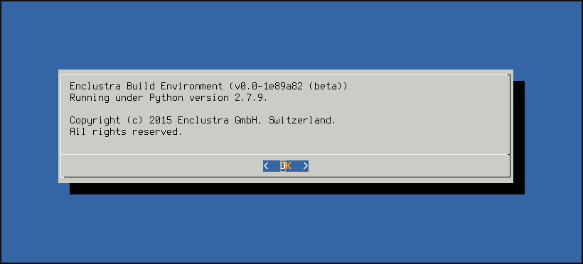Choose the configuration.
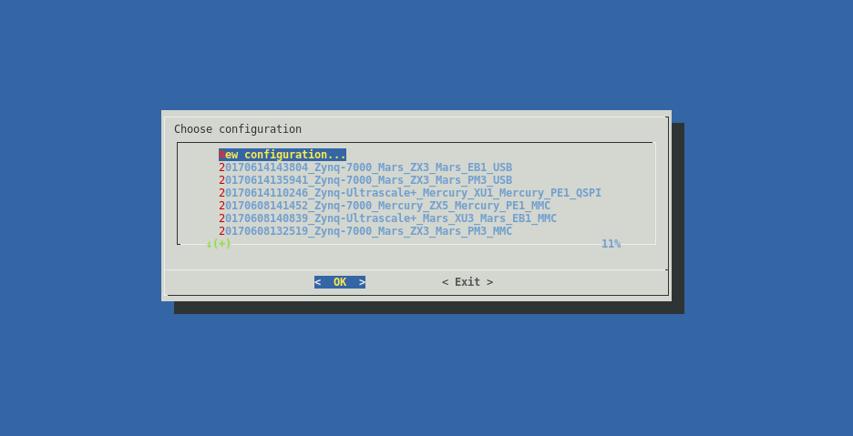Choose the chip type.
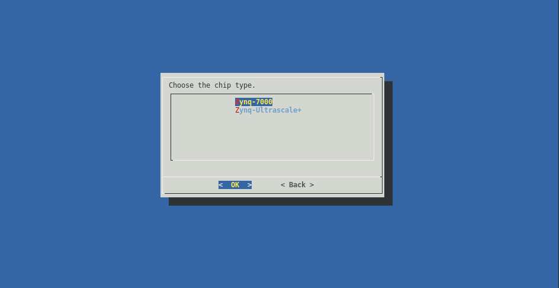Choose the module type.
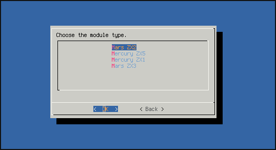Choose the base board type.
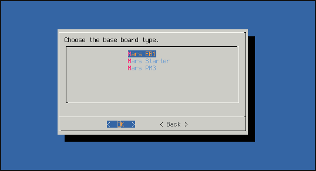Choose the boot device.
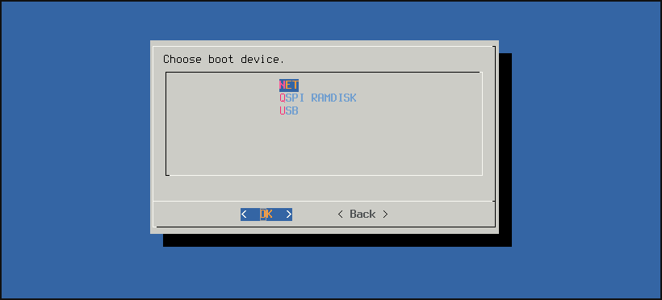Choose which targets available for the chosen device family will be fetched. On the bottom of the screen a short description of the highlighted target is displayed. Choosing certain targets may disable fetching others.
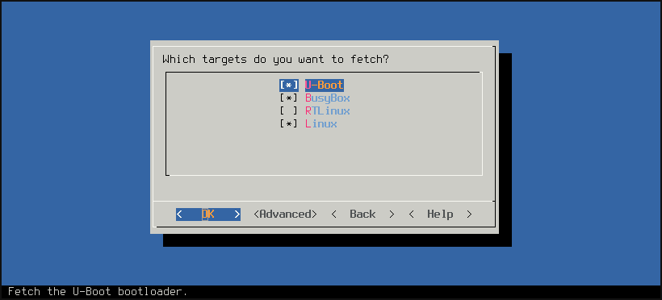Choose which targets will be built. On the bottom of the screen a short description of a highlighted target is displayed. Choosing certain targets may disable building others. In order to use the default target configuration enable the
Load initial ... configurationcheckbox. If changes have been made to the target, disable this checkbox, so that the changes are not overwritten during the build process.Choose the exact version of the device (chip type, industrial/commercial grade, speed grade).
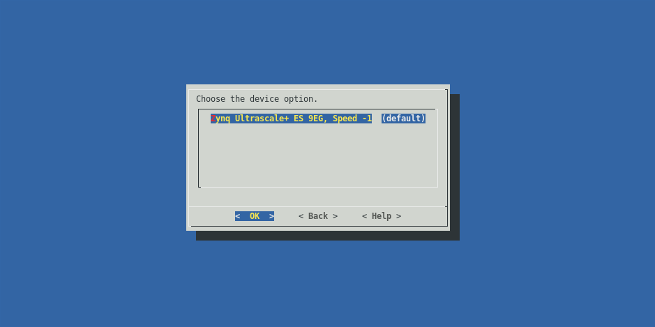Customize binaries or use the default ones.
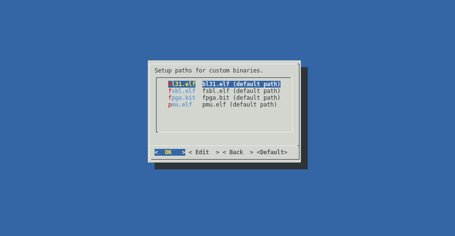Verify all the chosen build parameters.
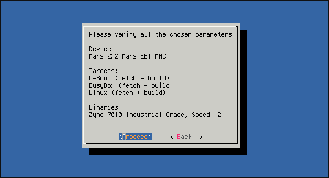Choose whether or not to save the configuration for later use.
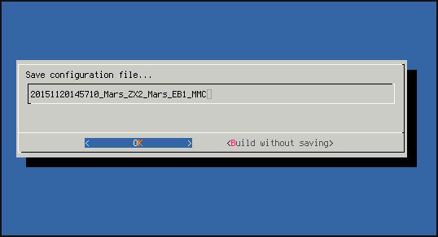The build environment will fetch and build the chosen targets.
Command Line¶
The build process can be invoked from the command line. All options that are available in the GUI are present on the command line interface as well. A list of the available command line options can be obtained like this:
./build.sh --help
usage: tool [-h] [--release ver] [-L] [--list-devices-raw] [-d device] [-l]
[--list-targets-raw] [-x target] [-f target] [-b target]
[--custom-build target steps] [--fetch-history target]
[--list-dev-options] [--list-dev-binaries] [-B file path]
[--anti-unicorn] [--expert-mode] [-o index] [--generate-project]
[--build-project project_file] [--build-project-auto project_file]
[-s cfg] [-c] [-C] [-v]
Enclustra Build Environment
optional arguments:
-h, --help show this help message and exit
--release ver specify release version of the buidscripts
-L, --list-devices list all available devices
--list-devices-raw list all available devices in a script
friendly way
-d device, --device device specify device as follows:
<family>/<module>/<base_board>/<boot_device>
-l, --list-targets list all targets for chosen device
--list-targets-raw list all targets for chosen device in a script
friendly way
-x target fetch and build specific target
-f target, --fetch target fetch specific target
-b target, --build target build specific target
--custom-build target steps build specific target with specific steps
(comma separated)
--fetch-history target fetch specific target with history
--list-dev-options list all available device options for chosen
device
--list-dev-binaries list all available binary files for chosen
device
-B file path, --custom-binary file path
exchange selected binary file with the one
pointed by the path
--anti-unicorn disables colored output
--expert-mode expert mode: prepare the environment for
building the whole system manually
-o index, --dev-option index set device option by index, the default one
will be used if not specified
--generate-project generate project directory instead of a
regular output
--build-project project_file build project
--build-project-auto project_file
build project automatically, skip the gui
-s cfg, --saved-config cfg use previously saved configuration file
-c, --clean-all delete all downloaded code, binaries, tools
and built files
-C, --clean-soft run clean commands for all specified targets
(if available)
-v, --version print version
In order to list all available devices use the following command:
./build.sh -L
If the build.sh script is invoked with the -d option, the build environment switches to console mode.
This mode requires a valid device specifier in order to locate the device configuration within the targets directory for the specific device, e.g. for the Mars ZX3 module on the Mars PM3 base board in QSPI boot mode, the command would look like this:
./build.sh -d Zynq-7000/Mars_ZX3/Mars_PM3/QSPI
Such a command will fetch and build all the default targets for a selected device.
To list all the available targets for a selected device, the user needs to add the -l switch to the command, e.g.:
./build.sh -d Zynq-7000/Mars_ZX3/Mars_PM3/QSPI -l
The -x option will fetch and build only the selected target, e.g.:
./build.sh -d Zynq-7000/Mars_ZX3/Mars_PM3/QSPI -x Linux
That will fetch and build only the Linux target for the selected device.
To only fetch or build a specific target, the user can specify those targets with the -f (fetch) and -b (build) options. It is possible to choose multiple targets, e.g. like this:
./build.sh -d Zynq-7000/Mars_ZX3/Mars_PM3/QSPI -f Linux -b Buildroot -x U-Boot
This will fetch Linux, build Buildroot and fetch/build U-Boot.
The --list-dev-options option will list all the available device options for the chosen device. It can be used like this:
./build.sh -d Zynq-7000/Mars_ZX3/Mars_PM3/QSPI -x Linux --list-dev-options
This will print out an indexed list of device options.
The -o option allows the user to choose a device option for the selected device by providing the index of a specific device option, like this:
./build.sh -d Zynq-7000/Mars_ZX3/Mars_PM3/QSPI -x Linux -o 1
If no device option is selected, the default one will be used.
To reset the build environment and delete all downloaded code, binaries, tools and built files, the --clean option can be used:
./build.sh --clean
Deployment¶
This chapter describes how to prepare the hardware to boot from different boot media, using the binaries generated from the build environment. The boot process differs in its details on different hardware, but in general it covers the following steps:
- BootRom embedded in a CPU starts execution after reset. It searches through a predefined storages for a next (first) stage boot loader.
- First stage boot loader (FSBL, U-Boot SPL) is loaded into On Chip Memory, and executed.
- First stage boot loader initializes RAM controller, clocks and loads second stage boot loader into RAM.
- Second stage boot loader (U-Boot) loads the Linux kernel, device tree blob and any other required files into RAM and runs the Linux kernel.
- Linux kernel configures peripherals, mounts user space root filesystem and executes the
initapplication within it. Initapplication starts the rest of the user space applications - the system is up and running.
For more detailed information about the boot process on a Xilinx Zynq devices please refer to:
All the guides in this section require the user to build the required files for the chosen device, with the build environment, as described in the previous section. Once the files are built, they can be deployed to the hardware as described in the following sub sections.
Note
Default target output directories are named according to the following directory naming scheme:
out_<timestamp>_<module>_<board>_<bootmode>.
As a general note on U-Boot used in all the following guides: U-Boot is using variables from the default environment. Moreover, the boot scripts used by U-Boot also rely on those variables. If the environment was changed and saved earlier, U-Boot will always use these saved environment variables on a fresh boot, even after changing the U-Boot environment.
Note
Regardless of the selected boot mode, the U-Boot environment is stored in the last 512 KiB of the QSPI flash memory.
To restore the default environment, run the following command in the U-Boot command line:
env default -a
This will not overwrite the stored environment but will only restore the default one in the current run.
To permanently restore the default environment, the saveenv command has to be invoked.
Note
A *** Warning - bad CRC, using default environment warning message that appears when booting into U-Boot indicates that the default environment will be loaded.
SD Card (MMC)¶
In order to deploy images to an SD Card and boot from it, perform the following steps as root:
Create a FAT formatted BOOT partition as the first one on the SD Card. The size of the partition should be at least 64 MB. (For more information on how to prepare the boot medium, please refer to the official Xilinx guide.)
Create an ext4 formatted partition (rootfs) as the second one on the SD Card. The size of the partition should be at least 64 MB.
Copy
boot.bin, the kernel image (uImagefor Zynq-7000 orImagefor Zynq Ultrascale+),devicetree.dtbanduboot.scr(oruboot_ramdisk.scrfile when using RAMDISK, which must be renamed touboot.scr) from the build environment output directory onto the BOOT partition (FAT formatted). Copyuramdiskto the same partition (only when using RAMDISK).Extract the
rootfs.tararchive from the build environment output directory onto the second partition (rootfs, ext4 formatted).Note
This step is required only for persistent rootfs.
sudo tar -xpf rootfs.tar -C /path/to/mmc/mountpoint
Unmount all partitions mounted from the SD Card.
Insert the card into the SD Card slot on the board.
Configure the board to boot from the SD Card (refer to the board User Manual).
Power on the board.
The board should boot the Linux system.
If one wants to manually trigger booting from a SD Card, the following command has to be invoked from the U-Boot command line:
run sdboot
eMMC Flash¶
Prepare a bootable SD card with a ramdisk or persistent rootfs as described in SD Card (MMC).
You’ll need the following files from eMMC build:
boot.bin,devicetree.dtb,Image(Zynq Ultrascale+ only),uImage(Zynq-7000 only). Additionally, you’ll needuramdisk,uboot_ramdisk.scrwhen you want to use a ramdisk, androotfs.tar,uboot.scrto use a persistent rootfs. Copy the files to a TFTP server’s directory to load them later through the network. If you don’t want to use the network connection on the board, copy the files to theemmcdirectory on the SD card’s rootfs partition instead.Boot Linux on the device from the SD Card (ramdisk or persistent rootfs) and login as root.
If you’ve put eMMC build files on the SD card, and you’re booting from a ramdisk, mount the SD card’s second partition in
/mnt. When booting from a persistent rootfs, the files are already in/emmc. In either case,cdto a directory with the files. In the case of files located on a TFTP server, connect to the network by runningdhcpcd eth0and download the files:tftp -g -r boot.bin $SERVER_IP tftp -g -r devicetree.dtb $SERVER_IP tftp -g -r uImage $SERVER_IP # Zynq-7000 only tftp -g -r Image $SERVER_IP # Ultrascale+ only # For eMMC with persistent rootfs: tftp -g -r rootfs.tar $SERVER_IP tftp -g -r uboot.scr $SERVER_IP # For eMMC with ramdisk: tftp -g -r uramdisk $SERVER_IP tftp -g -r uboot_ramdisk.scr -l uboot.scr $SERVER_IP
$SERVER_IPis your TFTP server IP address.There are two
/dev/mmcblkNdevices. One of them is the SD card, and the other is the eMMC. To identify the eMMC, look which one has theboot0partition:ls /dev/mmcblk*boot0
Partition the eMMC. Create a FAT32
bootpartition as the first partition on the device, make its size at least 64 MB. If you want to use a persistent rootfs, create a second ext4rootfspartition (at least 64 MB large).Note
For more information on how to prepare the boot medium, please refer to the official Xilinx guide. Remember to use eMMC device
mmcblkXinstead ofsdX.Mount the
bootpartition and copy boot files to it:mkdir -p /mnt/boot mount /dev/mmcblkXp1 /mnt/boot cp boot.bin devicetree.dtb uboot.scr /mnt/boot/ cp uImage /mnt/boot/ # Zynq-7000 only cp Image /mnt/boot/ # Ultrascale+ only # For eMMC with ramdisk: cp uramdisk /mnt/boot/ umount /mnt/boot
Mount the
rootfspartition and extractrootfs.tar(persistent rootfs only):mkdir -p /mnt/rootfs mount /dev/mmcblkXp2 /mnt/rootfs tar -xpv -C /mnt/rootfs/ -f rootfs.tar umount /mnt/rootfs
QSPI Flash¶
The QSPI Flash is divided into 6 partitions based on U-Boot environment variables. Those variables are calculated and set automatically, so in most cases there is no need to change them. For more detailed information on partition offsets and sizes, please refer to QSPI Flash Layouts.
Note
Since release 1.5, 16MB QSPI Flash memories are no longer supported.
In order to deploy images to QSPI Flash and boot from it, do the following steps:
Setup a TFTP server on the host computer.
Power on the board and boot to U-Boot (e.g. from a SD Card (MMC)).
Connect an Ethernet cable to the device.
Connect a serial console to the device (e.g. using PuTTY or picocom).
Setup the U-Boot connection parameters (in the U-Boot console):
setenv ipaddr 'xxx.xxx.xxx.xxx' # where xxx.xxx.xxx.xxx is the board address setenv serverip 'yyy.yyy.yyy.yyy' # where yyy.yyy.yyy.yyy is the server (host computer) address
Copy
boot.bin, the kernel image (uImagefor Zynq-7000 orImagefor Zynq Ultrascale+),devicetree.dtb,uboot.scr(oruboot_ramdisk.scrfile which must be renamed touboot.scr) androotfs.jffs2(oruramdiskwhen using RAMDISK) from the build environment output directory to the TFTP server directory.Set memory pinmux to QSPI Flash:
Note
This step is required only for modules equipped with Zynq-7000 devices.
zx_set_storage QSPI
Before accessing the QSPI Flash for the first time, the flash device must be enumerated:
sf probe
Update the boot image:
mw.b ${bootimage_loadaddr} 0xFF ${bootimage_size} tftpboot ${bootimage_loadaddr} ${bootimage_image} sf erase ${qspi_bootimage_offset} ${bootimage_size} sf write ${bootimage_loadaddr} ${qspi_bootimage_offset} ${filesize}
Update the boot script image:
mw.b ${bootscript_loadaddr} 0xFF ${bootscript_size} tftpboot ${bootscript_loadaddr} ${bootscript_image} sf erase ${qspi_bootscript_offset} ${bootscript_size} sf write ${bootscript_loadaddr} ${qspi_bootscript_offset} ${filesize}
Update the Linux kernel:
mw.b ${kernel_loadaddr} 0xFF ${kernel_size} tftpboot ${kernel_loadaddr} ${kernel_image} sf erase ${qspi_kernel_offset} ${kernel_size} sf write ${kernel_loadaddr} ${qspi_kernel_offset} ${filesize}
Update the devicetree image:
mw.b ${devicetree_loadaddr} 0xFF ${devicetree_size} tftpboot ${devicetree_loadaddr} ${devicetree_image} sf erase ${qspi_devicetree_offset} ${devicetree_size} sf write ${devicetree_loadaddr} ${qspi_devicetree_offset} ${filesize}
Update the rootfs image:
This step depends on the chosen boot device.
If QSPI RAMDISK was selected:
mw.b ${ramdisk_loadaddr} 0xFF ${ramdisk_size} tftpboot ${ramdisk_loadaddr} ${ramdisk_image} sf erase ${qspi_ramdisk_offset} ${ramdisk_size} sf write ${ramdisk_loadaddr} ${qspi_ramdisk_offset} ${filesize}
If QSPI was selected:
mw.b ${jffs2_loadaddr} 0xFF ${jffs2_size} tftpboot ${jffs2_loadaddr} ${jffs2_image} sf erase ${qspi_rootfs_offset} ${jffs2_size} sf write ${jffs2_loadaddr} ${qspi_rootfs_offset} ${filesize}
Note
For Zynq Ultrascale+ modules, QSPI boot mode with persistent rootfs is implemented using the SD card for the rootfs image. A .tar archive is generated for these modules instead of a .jffs2 file. This archive must be extracted to the Linux partition of the SD card. (For more information on how to prepare the boot medium, please refer to the official Xilinx guide.)
- Power off the board.
- Configure the board to boot from the QSPI Flash (refer to the board User Manual).
- Power on the board.
- The board should boot the Linux system.
If one wants to manually trigger booting from the QSPI Flash, the following command has to be invoked from the U-Boot command line:
run qspiboot
Note
Note that step 8 to 12 can be invoked independently.
QSPI Flash using the full image¶
- Copy the
boot_full.bin(orboot_full_ramdisk.binwhen using RAMDISK, which must be renamed toboot_full.bin) file from the build environment output directory to the TFTP server directory.
Note
The boot_full.bin file is available only for modules equipped with Zynq-7000 devices.
Flash the QSPI memory:
mw.b ${bootfull_loadaddr} 0xFF 0x4000000 tftpboot ${bootfull_loadaddr} boot_full.bin sf probe sf erase 0x0 0x4000000 sf write ${bootfull_loadaddr} 0x0 ${filesize}
Configure the board to boot from the QSPI flash (refer to the board’s User Manual).
Reset the board.
The board should boot the Linux system.
If you want to manually trigger booting from the QSPI flash, the following command has to be invoked from the U-Boot command line:
run qspiboot
NAND Flash¶
Enclustra Build Environment does not support direct boot from the NAND Flash memory. The FSBL and the U-Boot have to be started from SD Card (MMC) or QSPI Flash. Please refer to SD Card (MMC) or eMMC Flash in order to boot U-Boot from SD Card or QSPI Flash. When U-Boot is booted it can load and boot the Linux system stored on the NAND Flash memory.
| Partition | Offset | Size |
|---|---|---|
| Linux kernel | 0x0 | 0x500000 |
| Linux Device Tree | 0x500000 | 0x100000 |
| Bootscript | 0x600000 | 0x100000 |
| Rootfs | 0x700000 | Rest of the NAND Storage space |
Note
Not all Xilinx-based modules come with NAND Flash memory.
In order to deploy images and boot the Linux system from NAND Flash, do the following steps:
Setup an TFTP server on the host computer.
Power on the board and boot to U-Boot (e.g. from a SD Card (MMC)).
Connect an Ethernet cable to the device.
Connect a serial console to the device (e.g. using PuTTY or picocom).
Copy the kernel image (
uImagefor Zynq-7000 orImagefor Zynq Ultrascale+),devicetree.dtb,uboot.scrandrootfs.ubifiles from the build environment output directory to the TFTP server directory.Stop the U-Boot autoboot.
Setup the U-Boot connection parameters (in the U-Boot console):
setenv ipaddr 'xxx.xxx.xxx.xxx' # where xxx.xxx.xxx.xxx is the board address setenv serverip 'yyy.yyy.yyy.yyy' # where yyy.yyy.yyy.yyy is the server (host computer) address
Set the memory pinmux to NAND Flash:
zx_set_storage NAND
Update the boot script image:
mw.b ${bootscript_loadaddr} 0xFF ${bootscript_size} tftpboot ${bootscript_loadaddr} ${bootscript_image} nand device 0 nand erase.part nand-bootscript nand write ${bootscript_loadaddr} nand-bootscript ${filesize}
Update the Linux kernel:
mw.b ${kernel_loadaddr} 0xFF ${kernel_size} tftpboot ${kernel_loadaddr} ${kernel_image} nand device 0 nand erase.part nand-linux nand write ${kernel_loadaddr} nand-linux ${filesize}
Update the devicetree image:
mw.b ${devicetree_loadaddr} 0xFF ${devicetree_size} tftpboot ${devicetree_loadaddr} ${devicetree_image} nand device 0 nand erase.part nand-device-tree nand write ${devicetree_loadaddr} nand-device-tree ${filesize}
Update the rootfs image:
mw.b ${ubifs_loadaddr} 0xFF ${ubifs_size} tftpboot ${ubifs_loadaddr} ${ubifs_image} nand device 0 nand erase.part nand-rootfs nand write ${ubifs_loadaddr} nand-rootfs ${filesize}
Trigger NAND Flash boot with:
run nandboot
Note
Note that step 8 to 11 can be invoked independently.
USB Drive¶
The Xilinx family devices cannot boot directly from a USB Drive. The FSBL and the U-Boot have to be started from SD Card (MMC) or QSPI Flash. Please refer to SD Card (MMC) or eMMC Flash in order to boot U-Boot from SD Card or QSPI Flash. When U-Boot is booted it can load and boot the Linux system stored on the USB Drive.
In order to deploy images and boot the Linux system from a USB Drive, perform the following steps:
Create a FAT formatted partition as the first partition on the drive. The size of the partition should be at least 64 MiB. (For more information on how to prepare the boot medium, please refer to the official Xilinx guide.)
Copy the kernel image (
uImagefor Zynq-7000 orImagefor Zynq Ultrascale+),devicetree.dtb,uramdiskanduboot_ramdisk.scr(which must be renamed touboot.scr) from the build environment output directory to the FAT formatted partition.Insert the USB drive into the USB port of the board.
Configure the board to boot from the SD Card (MMC) or QSPI Flash (refer to the board User Manual).
Power on the board and stop the U-Boot autoboot.
Trigger USB boot with:
run usbboot
NFS¶
The Xilinx family devices cannot boot directly from NFS.
The FSBL and the U-Boot have to be started from SD Card (MMC), with the images generated by the build environment. When U-Boot is booted it can load and boot the Linux system from the host machine via Ethernet. Please refer to NFS Preparation Guide to prepare your system for NFS boot.
In order to deploy images and boot the Linux system over NFS, do the following steps as root:
Create a FAT formatted BOOT partition as the first one on the SD Card. The size of the partition should be at least 64 MB. (For more information on how to prepare the boot medium, please refer to the official Xilinx guide.)
Copy
boot.binanduboot.scrfrom the build environment output directory onto the BOOT partition.Extract the
rootfs.tararchive from the build environment output directory into the NFS folder.sudo tar -xpf rootfs.tar -C /path/to/NFS
Copy the kernel image (
uImagefor Zynq-7000 orImagefor Zynq Ultrascale+),devicetree.dtbanduboot.scrto the TFTP folder.Insert the card into the SD Card slot on the board.
Configure the board to boot from the SD Card (MMC).
Power on the board and stop the U-Boot autoboot.
Set the server’s and target’s IP address, and the path to the rootfs NFS folder.
env default -a setenv ipaddr 192.168.1.10 setenv serverip 192.168.1.2 setenv serverpath /path/to/NFS saveenv
Trigger NFS boot with:
run netboot
Note
Saving the U-Boot environment this way will ensure that NFS boot runs automatically after reboot.
NFS Preparation Guide¶
For development, it can be very handy to mount the root filesystem via NFS (nfsroot).
To prepare the host machine several preparatory steps are required.
The following servers need to be installed on the host machine, and configured properly:
- NFS server (e.g. on Ubuntu
nfs-kernel-server) - TFTP server (e.g. on Ubuntu
tftpd) - DHCP server (e.g. on Ubuntu
isc-dhcp-server)
For demonstration purpose, the TFTP folder on the host is /tftpboot. It can be configured like this:
$ sudo mkdir /tftpboot
$ sudo chown nobody /tftpboot
$ nano /etc/xinetd.d/tftp
$ cat /etc/xinetd.d/tftp
service tftp
{
protocol = udp
port = 69
socket_type = dgram
wait = yes
user = nobody
server = /usr/sbin/in.tftpd
server_args = /tftpboot
disable = no
}
$ sudo /etc/init.d/xinetd restart
For demonstration purpose, the NFS export folder is /nfs_exp. In can be configured like this:
$ sudo mkdir /nfs_exp
$ sudo chown root:root /nfs_exp
$ sudo chmod 777 /nfs_exp
$ sudo nano /etc/exports
$ cat /etc/exports
/nfs_exp 192.168.1.0/24(fsid=0,rw,no_subtree_check,no_root_squash)
$ sudo exportfs -a
Sometimes it is also necessary to restart the NFS server:
$ sudo /etc/init.d/nfs-kernel-server restart
To configure the DHCP server do this:
$ cat /etc/dhcp/dhcpd.conf
default-lease-time 600;
max-lease-time 7200;
option subnet-mask 255.255.255.0;
option broadcast-address 192.168.1.255;
option domain-name-servers 192.168.1.1, 192.168.1.2;
subnet 192.168.1.0 netmask 255.255.255.0 {
range 192.168.1.10 192.168.1.255;
}
$ sudo /etc/init.d/isc-dhcp-server restart
To select your ethernet interface edit /etc/default/isc-dhcp-server:
$ sudo sed -i -r 's/INTERFACES="(.+)"/INTERFACES="eth1"/g' /etc/default/isc-dhcp-server
sudo /etc/init.d/isc-dhcp-server restart
On the target in the Linux console, the NFS folder from the host should now accessible like this
# mkdir /nfs
# mount -t nfs -o port=2049,nolock,proto=tcp,ro,vers=3 <server_ip>:/nfs_exp /nfs
# cd /nfs
Note
Note that currently our Linux only supports NFS version 3, not 4. So the target folder needs to be specified, and the version is 3 (vers=3).
Note
Take care to properly handle the permissions on the server. They should match those used on the client.
After configuring your system, you can now deploy the new boot images to your TFTP folder, and extract the rootfs TAR archive to your NFS folder.
QSPI Flash Layouts¶
The QSPI flash layout depends on the version of the Zynq chip that is present in the module.
| Partition | Filename | Offset | Size |
|---|---|---|---|
| Boot image | boot.bin | 0x0 | 0x600000 |
| Linux kernel | uImage | 0x600000 | 0x500000 |
| Linux Device Tree | devicetree.dtb | 0xB00000 | 0x80000 |
| U-Boot environment | 0x3F80000 | 0x80000 | |
| Bootscript | uboot.scr/uboot_ramdisk.scr | 0xB80000 | 0x80000 |
| Rootfs | rootfs.jffs2/uramdisk | 0xC00000 | 0x3380000 |
| Partition | Filename | Offset | Size |
|---|---|---|---|
| Boot image | boot.bin | 0x0 | 0x700000 |
| Linux kernel | uImage | 0x700000 | 0x500000 |
| Linux Device Tree | devicetree.dtb | 0xC00000 | 0x80000 |
| U-Boot environment | 0x3F80000 | 0x80000 | |
| Bootscript | uboot.scr/uboot_ramdisk.scr | 0xC80000 | 0x80000 |
| Rootfs | rootfs.jffs2/uramdisk | 0xD00000 | 0x3280000 |
| Partition | Filename | Offset | Size |
|---|---|---|---|
| Boot image | boot.bin | 0x0 | 0xE00000 |
| Linux kernel | uImage | 0xE00000 | 0x500000 |
| Linux Device Tree | devicetree.dtb | 0x1300000 | 0x80000 |
| U-Boot environment | 0x3F80000 | 0x80000 | |
| Bootscript | uboot.scr/uboot_ramdisk.scr | 0x1380000 | 0x80000 |
| Rootfs | rootfs.jffs2/uramdisk | 0x1400000 | 0x2B80000 |
| Partition | Filename | Offset | Size |
|---|---|---|---|
| Boot image | boot.bin | 0x0 | 0x900000 |
| Linux kernel | Image | 0x900000 | 0xE00000 |
| Linux Device Tree | devicetree.dtb | 0x1700000 | 0x80000 |
| U-Boot environment | 0x3F80000 | 0x80000 | |
| Bootscript | uboot_ramdisk.scr | 0x1780000 | 0x80000 |
| Rootfs | uramdisk | 0x1800000 | 0x2780000 |
| Partition | Filename | Offset | Size |
|---|---|---|---|
| Boot image | boot.bin | 0x0 | 0x1D00000 |
| Linux kernel | Image | 0x1D00000 | 0xE00000 |
| Linux Device Tree | devicetree.dtb | 0x2B00000 | 0x80000 |
| U-Boot environment | 0x3F80000 | 0x80000 | |
| Bootscript | uboot_ramdisk.scr | 0x2B80000 | 0x80000 |
| Rootfs | uramdisk | 0x2C00000 | 0x1580000 |
| Partition | Filename | Offset | Size |
|---|---|---|---|
| Boot image | boot.bin | 0x0 | 0x1F00000 |
| Linux kernel | Image | 0x1F00000 | 0xE00000 |
| Linux Device Tree | devicetree.dtb | 0x2D00000 | 0x80000 |
| U-Boot environment | 0x3F80000 | 0x80000 | |
| Bootscript | uboot_ramdisk.scr | 0x2D80000 | 0x80000 |
| Rootfs | uramdisk | 0x2E00000 | 0x1580000 |
Project mode¶
For users who want to use the Enclustra Build Environment, but still be able to modify the parts of the system, a ‘project mode’ is available.
Project mode is similar to regular mode, but enables user to fully customize all the parts of the system.
To enable project mode, choose “Advanced” option on the very last screen of the GUI workflow.
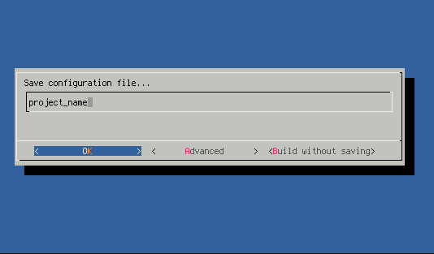
Check the ‘enable’ option on.
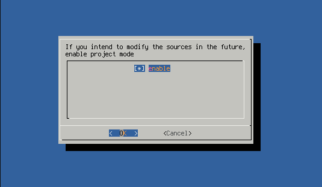
Continue as usual.
After the regular build has finished, the sources of the components that were chosen to be fetched, are going to be copied to the output directory. User is free to modify those sources and add a git upstream to them to keep them versioned.
Besides the sources, a new build script called build.sh is generated. This script will run the Enclustra Build Environment in a special project mode. In this mode the step for choosing components to fetch is skipped, and the user is prompted to choose which of the components to build. If any of the components of the system were modified, the Build system will build them, and include the output files in the final boot images.
Updating the binaries¶
Changes in the FPGA design
If you want to modify the FPGA design, you can update the binaries in two ways:
By changing the path to custom binaries when you choose the device option in the Enclustra Build Environment.
By using the project mode:
Enable project mode in the Enclustra Build Environment.
Copy to the output directory (the directory with the boot sources created by the Enclustra Build Environment):
- the new *.bit file (if you introduced changes to the FPGA programmable logic (PL)),
- the new *.elf file (if you introduced changes to the processing system (PS) of the FPGA SoC).
Please note that the *.bit file should be named ‘fpga.bit’ and the *.elf file ‘fsbl.elf’.
Run the Enclustra Build Environment.
The new ‘boot.bin’ file will be generated in the output directory. You can then place this file to boot the device (for example, in case of an SD Card, please refer to SD Card (MMC)).
Changes in U-boot, Linux or Buildroot
If you want to modify U-boot, Linux or Buildroot, perform the following steps:
Go to the ‘sources/’ directory, where U-boot, Linux and Buildroot repositories are placed.
Introduce your changes in the selected repository.
Run the Enclustra Build Environment in project mode to compile and build the modified sources.
Replace the files on the target device, depending on which repository you changed:
- xilinx-linux: the devicetree.dtb and the kernel image files (‘uImage’ for Zynq-7000 or ‘Image’ for Zynq Ultrascale+).
- xilinx-uboot: the ‘uboot.scr’ and the ‘boot.bin’ file (containing the u-boot binary).
- buildroot-rootfs: the ‘rootfs.tar’ archive (or the ‘rootfs.jffs2’ or ‘uramdisk’, depending on which the target device you choose).
FAQ¶
How to script U-Boot?¶
All U-Boot commands can be automated by scripting, so that it is much more convenient to deploy flash images to the hardware.
For example, QSPI deployment:
Put the following commands as plain text to a file cmd.txt:
sf probe
echo "boot image"
mw.b ${bootimage_loadaddr} 0xFF ${bootimage_size}
tftpboot ${bootimage_loadaddr} ${bootimage_image}
sf erase ${qspi_bootimage_offset} ${bootimage_size}
sf write ${bootimage_loadaddr} ${qspi_bootimage_offset} ${filesize}
echo "boot script"
mw.b ${bootscript_loadaddr} 0xFF ${bootscript_size}
tftpboot ${bootscript_loadaddr} ${bootscript_image}
sf erase ${qspi_bootscript_offset} ${bootscript_size}
sf write ${bootscript_loadaddr} ${qspi_bootscript_offset} ${filesize}
echo "Linux kernel"
mw.b ${kernel_loadaddr} 0xFF ${kernel_size}
tftpboot ${kernel_loadaddr} ${kernel_image}
sf erase ${qspi_kernel_offset} ${kernel_size}
sf write ${kernel_loadaddr} ${qspi_kernel_offset} ${filesize}
echo "devicetree"
mw.b ${devicetree_loadaddr} 0xFF ${devicetree_size}
tftpboot ${devicetree_loadaddr} ${devicetree_image}
sf erase ${qspi_devicetree_offset} ${devicetree_size}
sf write ${devicetree_loadaddr} ${qspi_devicetree_offset} ${filesize}
echo "rootfs image"
mw.b ${jffs2_loadaddr} 0xFF ${jffs2_size}
tftpboot ${jffs2_loadaddr} ${jffs2_image}
sf erase ${qspi_rootfs_offset} ${jffs2_size}
sf write ${jffs2_loadaddr} ${qspi_rootfs_offset} ${filesize}
run qspiboot
Then generate an image cmd.img and put it onto the TFTP server on the host computer like following. Note that on Windows operating systems this needs to be executed in SoC EDS Command Shell. Be sure to use Unix line endings.
mkimage -T script -C none -n "QSPI flash commands" -d cmd.txt cmd.img
cp cmd.img /tftpboot
And finally, load the file on the target platform in U-boot and execute it, like this (after step 5 Setup U-Boot connection parameters, in the user documentation):
tftpboot 100000 cmd.img
source 100000
How can the flash memory be programmed from Linux?¶
In order to program flash memory from Linux, a script like the following one can be used. - All required files need to be present in the current folder. They can be loaded via TFTP or from USB drive / SD card.
#!/bin/sh
getsize ()
{
local size=`ls -al $1 | awk '{ print $5 }'`
echo "$size"
}
BOOTIMAGE_FILE="boot.bin"
KERNEL_FILE="Image"
DEVICETREE_FILE="devicetree.dtb"
SCRIPT_FILE="uboot.scr"
ROOTFS_FILE="rootfs.jffs2"
# write boot image
flash_erase /dev/mtd0 0 0
FILESIZE=`getsize ${BOOTIMAGE_FILE}`
echo Writing preloader file ${BOOTIMAGE_FILE} size ${FILESIZE}
mtd_debug write /dev/mtd0 0 ${FILESIZE} ${BOOTIMAGE_FILE}
# write Linux kernel
flash_erase /dev/mtd1 0 0
FILESIZE=`getsize ${KERNEL_FILE}`
echo Writing kernel file ${KERNEL_FILE} size ${FILESIZE}
mtd_debug write /dev/mtd1 0 ${FILESIZE} ${KERNEL_FILE}
# write devicetree
flash_erase /dev/mtd2 0 0
FILESIZE=`getsize ${DEVICETREE_FILE}`
echo Writing devicetree ${DEVICETREE_FILE} size ${FILESIZE}
mtd_debug write /dev/mtd2 0 ${FILESIZE} ${DEVICETREE_FILE}
# delete U-Boot configuration
flash_erase /dev/mtd3 0 0
# write boot script
flash_erase /dev/mtd4 0 0
FILESIZE=`getsize ${SCRIPT_FILE}`
echo Writing bootscript file ${SCRIPT_FILE} size ${FILESIZE}
mtd_debug write /dev/mtd4 0 ${FILESIZE} ${SCRIPT_FILE}
# write rootfs
flash_erase /dev/mtd5 0 0
FILESIZE=`getsize ${ROOTFS_FILE}`
echo Writing rootfs file ${ROOTFS_FILE} size ${FILESIZE}
mtd_debug write /dev/mtd5 0 ${FILESIZE} ${ROOTFS_FILE}
Just make the script executable and execute it like this:
chmod +x flash.sh
./flash.sh
Note
Please refer to the user documentation of the developer tools for more information.